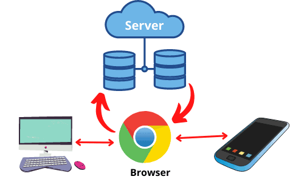
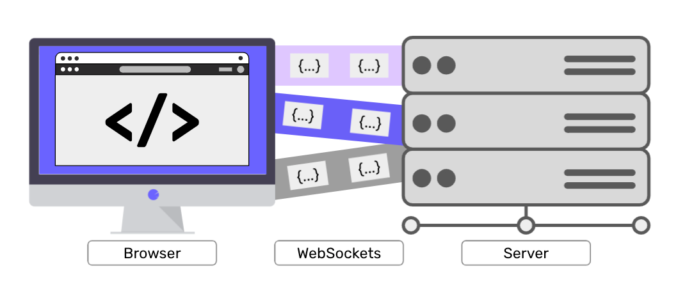

¿Como Funcionan?
>Los navegadores interpretan o ejecutan el código de una página web y permiten al usuario visualizar el resultado.
>Para eso, se conectan a través de la internet con el servidor web específico en el que se encuentra alojada la información de una página web y ejecutan las instrucciones de diseño y ensamblaje visual establecidas en su código fuente (HTML y otros protocolos web).

>A través de este conjunto de parámetros, se pueden recuperar los recursos que componen la página (no solo texto, sino también imágenes, video, música, animaciones o elementos interactivos) y disponerlos en pantalla de la manera adecuada, es decir, cada cosa en su sitio.
>Los navegadores web trabajan en conjunto con otros elementos clave de la web, como servidores y protocolos de comunicación y cuando introducimos una dirección web en la barra de direcciones del navegador, este envía una solicitud al servidor que aloja la página, a continuación, el servidor responde con la información correspondiente, como archivos HTML, CSS y JavaScript.
>El navegador interpreta estos archivos y muestra la página web en la pantalla de nuestro dispositivo.
Las Paginas Web estan compuestas tanto por texto como por elementos multimedia, que están almacenados en ordenadores remotos conectados a servidores de internet.
A estos se accede mediante un protocolo (un conjunto de reglas y normas que permiten la intercomunicación de dispositivos) conocido como HTTP (Hypertext Transfer Protocol, o Protocolo de transferencia de hipertexto).
En resumen los navegadores web funcionan así:
1.Descargan el código HTML y XML de una página web desde un servidor.
2.Interpretan y muestran ese código para crear la página web visible.
3.Utilizan lenguajes como HTML, CSS y JavaScript para mostrar el contenido.
4.Gestionan la comunicación con los servidores a través de los protocolos HTTP y HTTPS para cargar las páginas.
5.Trabajan en conjunto con otros elementos clave de la web, como servidores y protocolos de comunicación.